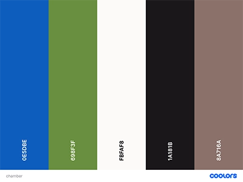

Site Purpose
A small idyllic community centered in the heart of Colleton County. We are committed to assisting our community by building a strong local economy, aiding in workforce development, and representing the business community at city and council levels. Your investment into our chamber helps us to achieve these goals and support these initiatives.
Scenarios
- What events will the chamber be holding this month that promote business-to-business networking?
- Where can I find contact information for the chamber's board of directors?
- What has been the population growth in the area?
Color Schema
Typography
- "Moon Dance", cursive
- "Mooli", sans-serif
- "Raleway", sans-serif
- "Calligraffitti", cursive